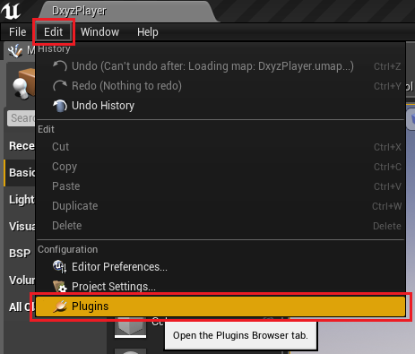
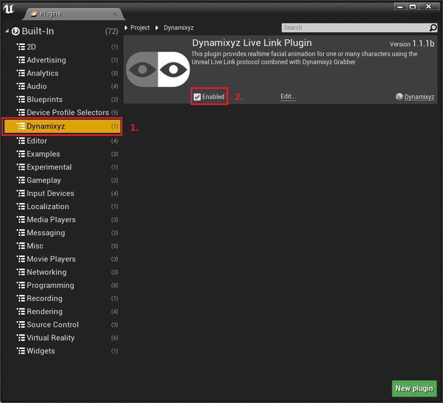

Installation from UE Marketplace¶
If you downloaded Dynamixyz Live Link Plugin from the Marketplace, follow these steps to enable it :
Open the Unreal Plugins Manager dialog by going into Edit -> Plugins. 
The Dynamixyz Plugins category should appear under Installed or Built-in plugins. Click on it, you should see the Dynamixyz Live Link Plugin. Check the Enabled field and restart the Editor. 
The plugin should now be ready for use.
Installation from sources¶
There are two ways to install the Dynamixyz Live Link Plugin from the sources and binaries :
As a project plugin: the plugin is meant to be used in the current project only. It will not be possible to package the project with Unreal.
As an engine plugin: the plugin is installed in the Unreal Engine and can be used in any project. Packaging with Unreal is possible in this case.
Note that you can easily switch from one mode to another at anytime during your production process.
Warning
If you have a custom version of Unreal Engine built from sources, the Editor will ask you to compile the sources. If the build is not successfull, please contact us at support@dynamixyz.com.
Prerequisite¶
Before installing Dynamixyz Live Link Plugin, you need to create a valid Unreal project.
You must ensure you have the correct version of the plugin for your Unreal Engine version : the suitable version is written in the name of the archive provided by Dynamixyz. For instance, DxyzLiveLinkPlugin_1.1.1b_UE4.19.zip indicates that the provided plugin will only be compatible with Unreal Engine 4.19. If you do not have the right plugin version, please contact the Dynamixyz team.
Note
PROJECT_PATH is the path to your UE4 project folder.
ENGINE_PATH is the path to your UE4 engine folder. (by default: C:\Program Files (x86)\Epic Games\UE_4.XX\Engine)
Setup as a project plugin¶
Close all running instances of Unreal Editor.
Copy the DxyzLiveLinkPlugin_UE4.XX_X.X.X folder under the PROJECT_PATH\Plugins folder.
Restart the Unreal Editor.
Open the Unreal Plugins Manager dialog by going into Edit -> Plugins.
The Dynamixyz Plugins category should appear under Project plugins. Click on it, you should see the Dynamixyz Live Link Plugin. Make sure the Enabled checkbox is checked.

The Dynamixyz Live Link Plugin is now activated and ready to use.
Setup as an engine plugin¶
Close all running instances of Unreal Editor.
Copy the DxyzLiveLinkPlugin_UE4.XX_X.X.X folder under the ENGINE_PATH\Plugins\Runtime folder.
Restart the Unreal Editor.
Open the Unreal Plugins Manager dialog by going into Edit -> Plugins.
The Dynamixyz Plugins category should appear under Installed (or Built-in) plugins. Click on it, you should see the Dynamixyz Live Link Plugin. Make sure the Enabled checkbox is checked.
Switching from one mode to the other¶
Delete the existing Dynamixyz Live Link Plugin from the corresponding folder (either in your PROJECT_PATH if you are currently using it as a project plugin, or in the ENGINE_PATH if you are currently using it as an engine plugin)
Delete the following folders from your project: Intermediate, Binaries, Build.
Warning
This step is important as it will force Unreal to rebuild your project.
Open your project: Unreal Editor should ask you to rebuild the project. Accept.
Once the project is loaded, check in the Plugins browser (Edit -> Plugins) that the “Enabled” checkbox is checked for the Dynamixyz Live Link Plugin.